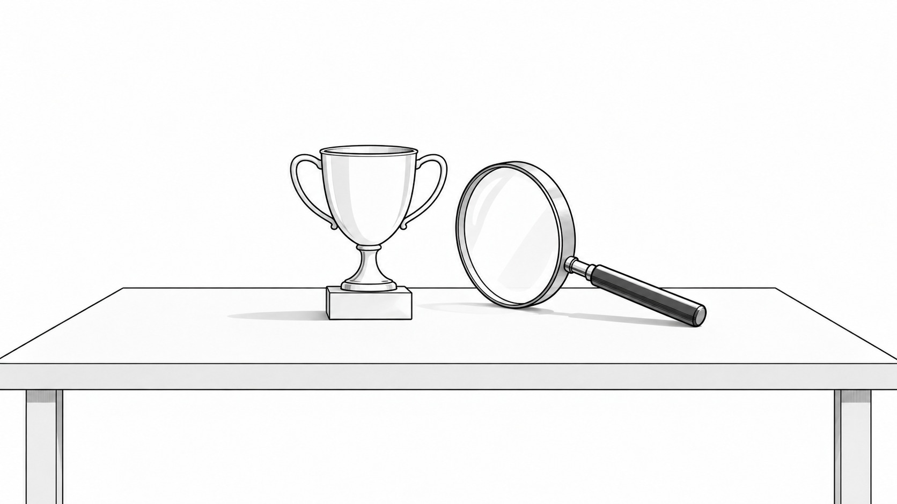

売れたときこそ「反省会」をしてください。

どーも！とーるです！
商品を募集した。売れなかった。0件。
こうなると、めちゃくちゃ考えますよね。
「価格が高かったかな」「投稿が弱かったかな」「LPかな」「そもそも商品が悪い？」
昨日までなんとなく投稿していたのに、売れなかった瞬間から、過去の投稿を全部見返す。
アクセス数を見る。クリック率を見る。競合まで調べる。
急に名探偵になります（笑）
でも。
3件売れた。5件売れた。完売した。
すると、「やった！」で終わることが、結構あります。
もちろん、喜んでいいんです。
ただ、そのあとに一つだけやった方がいいことがあります。
です。
自己奉仕バイアス——失敗には理由を求めるのに、成功は「実力」にしがち
これ、ビジネス以外でもあります。
テストが40点だった。
「勉強時間が足りなかった」「ここ苦手だったな」「前日にゲームやりすぎた」
原因を探します。
でも、90点だった。
「俺、頭いい。」
終了。
サッカーでシュートを外したら、フォーム、タイミング、軸足と、いろいろ考える。
でも、たまたま入ったスーパーゴールは、「俺、今日キレてるわ」で終わる。
行動経済学ではこれを自己奉仕バイアスと呼びます。うまくいったときは自分の実力のせいにし、うまくいかなかったときは外のせいにする。
これ、悪いことじゃないんです。自分を守るための仕組みなので。
ただ、ビジネスでこれをやると、
売れなかったときあれだけ分析するのに、売れた瞬間に「このやり方で合ってたんだ！」となる。
ここ、結構危ないと思っています。
「売れた」だけでは、何が良かったのか分からない
例えば、今回こんなことをしたとします。
- 商品名を変えた
- 価格を変えた
- LPを変えた
- ストーリーズを増やした
- 特典をつけた
- 募集期間を3日にした
- リールも出した
そして5件売れた。やった。成功です。
さて。
分かりませんよね。
もしかすると、全部あまり関係なくて、以前から半年投稿を見ていた人が、今月ちょうど必要になっただけかもしれない。
もっと言えば、その人の給料日だっただけかもしれない。
「売れた」という結果だけ見て、今回やったこと全部に○をつけると、偶然までが「成功ノウハウ」になってしまいます。
雨の日に赤いパンツを履いたら、競馬で勝った
SNSを見ていると、こういう投稿があります。
「この投稿をしたら売れました！」
「この一言を入れたら申込みが増えました！」
本当に効果があったものもあると思います。でも、一回結果が出ただけで、それが本当に原因だったかは分かりません。
雨の日に赤いパンツを履いて競馬へ行ったら10万円勝った。
だから「競馬で勝つなら赤いパンツです」とはならないですよね。
でもSNSマーケティングでは、案外これに近いことが起きます。
リールを出した。売れた。「リールが正解！」
値上げした。売れた。「高額にした方が売れる！」
いや、ちょっと待って。
という話です。
一番早いのは、買ってくれた人に聞くこと
じゃあ売れた理由ってどう調べるの？
難しく考えなくて大丈夫です。
これが一番早いです。
例えば、2つだけでもいいと思います。
- 何を見て知りましたか？
- 今回買おうと思った一番の理由は？
これだけでも、かなり分かります。
売る側では「このLPが良かった！」と思っていた。でもお客さんに聞いたら「半年前のコラムを読んでからずっと気になっていました」かもしれない。
「価格を3,980円にしたから売れた！」と思っていたのに、「値段は別に見てませんでした」と言われるかもしれない。
だから、売れたときほど聞く。
KSFは、売れなかった原因だけから探すものじゃない
僕がよく話すKSFにもつながります。
KSFは簡単にいうと、成果を出すために特に重要な要因です。
売上が上がった。その裏に10個くらいやったことがある。でも、本当に売上へ強く影響していたのは、1個か2個かもしれません。
全部を頑張るんじゃなく、
売れなかったときに「何がダメだったんだろう」と考える。
それも必要です。
でも、売れたときに「何が特に良かったんだろう」を見ることも、同じくらい大事なんです。
一度売れることと、売れ続けることは別です
一回なら、偶然でも売れます。
たまたま欲しい人がいた。
たまたま投稿が伸びた。たまたま紹介された。
それでも売上は売上です。めちゃくちゃいい。
でも、事業にしたいなら、その「たまたま」を少しずつ減らしていく必要があります。
ちなみに再現性って、「この通りやれば100％同じ結果になります」という意味で使われることがありますけど、僕はそんなものほぼないと思っています。
人も商品も時期も市場も違うので、全部同じ条件なんて作れません。
なので僕が考える再現性は、もっと現実的です。
という状態。ここまで分かれば、次の商品でも応用できます。
失敗は反省。成功は解剖。
商品が売れなかったとき。もちろん考えてください。
「なぜ売れなかったんだろう」
でも、商品が売れたときも、同じくらい考えてください。
むしろ、うまくいったときの方が、次につながるヒントがいっぱいあります。
失敗から学ぶ。これはよく言われます。
でも僕は、成功から学ぶ方が、意外と忘れられていると思っています。
失敗したら反省会。売れたら、祝勝会。
……だけじゃなく、そのあとに解剖会です。
何が良かった？どこが効いた？何はいらなかった？
感覚で見つけたものを、論理で残す。
「なんとなく売れた」を、「だから売れたんだと思う」へ。
そして何度か試して、「やっぱりここが重要そうだ」へ。
僕は、これが一発屋と売れ続ける人の違いの一つだと思っています。
次に売れたとき、ぜひ一回立ち止まってみてください。
とーる｜猫好きの行動経済アナリスト